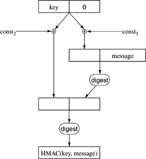

Networking Security Networking Security Networking Security Security Networking Security Networking Security Networking Charlie Kaufman Radia Perlman Mike Speciner Prentice Hall Network Security: Private Communication in a Public World, Second Edition Networking Security Networking Security Networking Security Security Networking Security Networking Security Networking Charlie Kaufman Radia Perlman Mike Speciner Prentice Hall Network Security: Private Communication in a Public World, Second Edition
5.7. HMAC
The idea of using a message digest algorithm in the construction of a MAC algorithm was described in section §5.2.2 Computing a MAC with a Hash. Given that one intuitively reasonable approachÂcomputing the digest of the concatenation of a shared secret with the messageÂhas flaws, cryptographers set out to find a construction that could be proven secure. Proving security of a cryptographic algorithm is difficult. First you have to start by defining "secure". Then the best you can do is prove that one algorithm is at least as secure as another.
HMAC resulted from an effort to find a MAC algorithm that could be proven to be secure if the underlying message digest's compression function (see §5.4.2 Overview of MD4 Message Digest Computation) was secure. They defined secure as having two properties:
collision resistance (infeasible to find two inputs that yield the same output) an attacker that doesn't know the key K cannot compute the proper digest(K,x) for data x, even if the attacker can see the value of digest(K,y), for arbitrary numbers of inputs y, with y not equal to x.
So in the case of HMAC, they proved that HMAC was secure (had those 2 properties) provided that the underlying compression function was secure (had those 2 properties). Although there are likely other alternatives that are more efficient and just as secure, nobody has offered the same sort of proof of those alternatives. So HMAC seems likely to become the de facto standard.
In essence, HMAC prepends the key to the data, digests it, and then prepends the key to the result and digests that. This nested digest with secret inputs to both iterations prevents the extension attacks that would be possible if you simply digested the key and message once. In detail, HMAC function takes a variable-length key and a variable-sized message and produces a fixed-size output that is the same size as the output of the underlying digest. It first pads the key with 0 bits to 512 bits. If the key is larger than 512 bits, then HMAC first digests the key, resulting in 128 bits or 160 bits (depending on the size of output of the digest function) and pads the result out to 512 bits. It then  s the padded key with a constant string of octets of value 3616, concatenates it with the message to be protected and computes a message digest. It s the padded key with a different constant string of octets of value 5c16, concatenates that with the result of the first digest, and computes a second digest on the result. s the padded key with a constant string of octets of value 3616, concatenates it with the message to be protected and computes a message digest. It s the padded key with a different constant string of octets of value 5c16, concatenates that with the result of the first digest, and computes a second digest on the result.

|